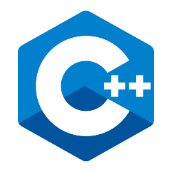
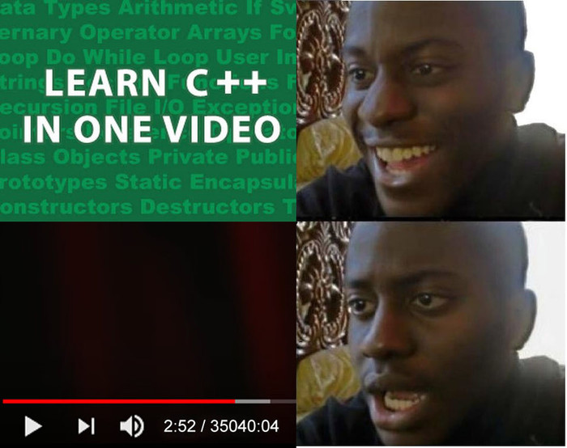

 В начале 80-х годов прошлого века сотрудник Bell Labs Бьёрн Страуструп после долгих мучений с существующими языками программирования провёл эксперимент со скрещиванием C и Simula. Он даже не рассчитывал, что его детище, получившее название C++, привлечёт столько внимания. Однако тогда язык произвёл настоящий фурор: компилируемый, структурированный, объектно-ориентированный, невероятно упрощающий работу с большими программами и при этом имеющий огромный потенциал для развития. Такой, что ещё почти десятилетие потребовалось Страуструпу, чтобы наделить C++ всеми характерными особенностями. Развитие же продолжается до сих пор. К примеру, стандарт C++17 был принят в конце прошлого года. Поэтому, если вы думаете, что C++ безнадёжно устарел, у нас для вас новость – отправить на пенсию его может только какая-нибудь невероятная технологическая революция. И вот почему.
Откройте любой тест производительности языков программирования, и в топе вы увидите C++, лишь С однозначно быстрее. Скорость исполнения кода — пожалуй, главный аргумент в пользу того, почему C++ был, есть и будет востребован в ИТ. Да, для реализации локальных нужд могут подойти C, Go или Rust, но если вы хотите изучить один язык, с помощью которого можно писать программы любой сложности, ваш выбор — C++. В противовес этому часто ставится скорость написания кода, которая, например, у интерпретируемых языков на порядок выше. В этом есть доля истины — C #, Java и конечно же Python даже визуально занимают меньше места, с их помощью можно создавать сложные программы, затратив минимум времени. Однако подумайте, что лучше для конечного пользователя: время разработки приложения или его медленная работа? Ответ очевиден.
Компиляторы C++ есть на каждой операционной системе, большинство программ легко переносится с платформы на платформу, со средой разработки и библиотеками у вас точно не возникнет проблем. C++ — это демонстрация идеи классического программирования, когда 90% мыслей связано с кодом и лишь 10% с используемой периферией. Достаточно просто вспомнить, где он используется: микроконтроллеры, IoT, роботы, десктопные и мобильные приложения, веб, игры, системы моделирования, прогнозирования, обработки статистики и в нейронных сетях. Везде. Просто не существует такой области программирования, где C++ был бы бесполезен. Да, сегодня сложно найти приложение, которое бы «от» и «до» было бы создано на C++. Но частично его использует почти любой крупный проект, поэтому его знание всегда будет являться плюсом в резюме программиста.
Речь не только об обновлениях стандартов и постоянном внедрении улучшений. C++ имеют колоссальное сообщество программистов, которые постоянно делятся библиотеками, шаблонами и кодами, приходят на помощь новичкам и опытным коллегам. При этом, в силу того, что C++ достаточно сложный язык, оно не изобилует лентяями и людьми, которые могут по 10 раз наступать на одни и те же грабли, подталкивая туда же новичков. В первую же очередь, огромное сообщество — плодородная почва для появления качественной литературы. По C++ есть несколько фундаментальных книг, по которым училось несколько поколений, есть новые, учитывающие все свежие изменения и актуальное ПО, есть масса интернет-ресурсов для обучения, в конце концов есть упомянутые стандарты.
 Java, JavaScript, C #, как и огромное количество других популярных языков программирования, содержит в основе принципы C++. Именно поэтому учебные программы многих вузов содержат курс «плюсплюс», который идёт сразу за получением основ на C. К примеру, принцип работы Java, одного из мощнейших языков современности, достаточно сложно понять, если не начать обучение с основ, которые впервые появились именно в C++. Кроме того, популярно мнение, что если вы сможете изучить C++, то любой другой язык не вызовет у вас никаких затруднений. Это что-то вроде того, как легко пытаться пересесть с механической коробки передач на автоматическую и как сложно проделать путь в обратном направлении. Почти все популярные языки программирования, что были придуманы позднее, имеют упрощенные структуру и механизмы, а процесс изучения сводится к освоению синтаксиса и ПО. Это создаёт целую армию программистов, которые просто не понимают, что создают в половине кода.
Ну и самое главное, почему C++ — настоящий must-know для амбициозного программиста: работая с ним, ты ощущаешь, что куда больше создаёшь, чем используешь. Достаточно сложный синтаксис, тысячи строк кода даже в простых программах, механизмы работы с памятью и периферией — поначалу всё это жутко бесит из-за постоянных ошибок. Но потом приходит дисциплина, опыт и ты понимаешь, что C++ — это и есть настоящее программирование.